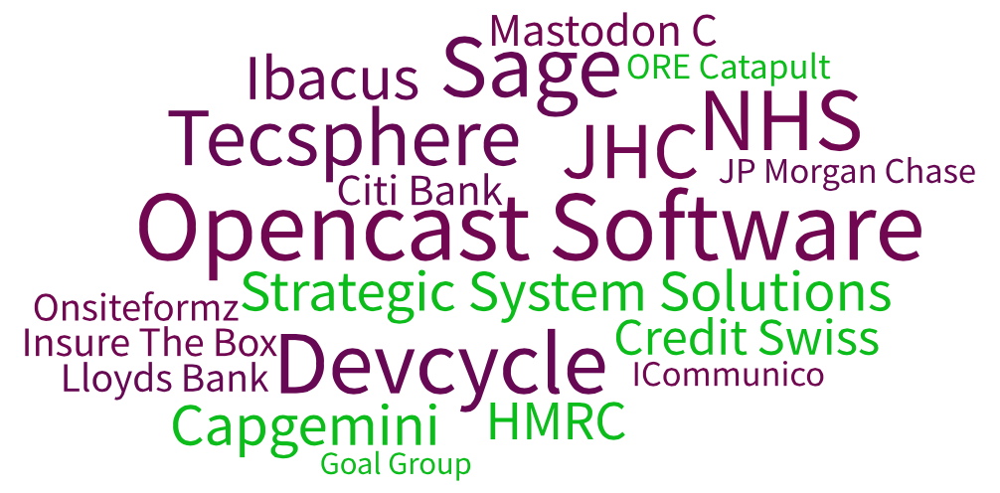
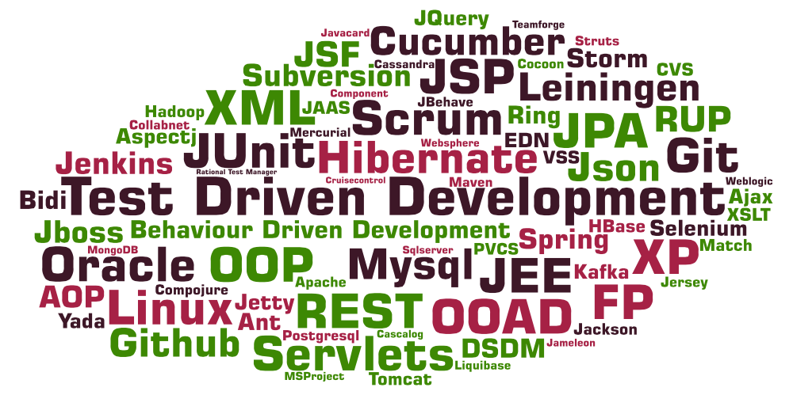

Developer Disciplines
Chris Howe-Jones
@agile_geek
14th March 2016
Developer Disciplines
Who wants to be a Developer?
Developer
- What makes a 'Developer'?
- Why it matters?
- Why am I qualified to talk to you?
Who am I?
Name: Chris Howe-Jones
Job Title: Technical Navigator
Twitter: @agile_geek
Github: github.com/chrishowejones
Blog: chrishowejones.wordpress.com
Worked for?

Jobs?

Languages?

Technologies and Disciplines?

So?
Why do I care?
Because I'm the person who will employ you!
Or someone just like me
What Disciplines?
Don't I just need to program?
What else do I need?
Software Development is a Complex World
Multi-Disciplined Teams
- Developers/Programmers
- Testers/QA
- Business Analysts
- Scrum Masters
- Product Owners
- Project Managers
- Tech Leads
- Team Leaders
- Product Managers
Complex Environment
- Polyglot Programming
- multiple languages
- Polyglot Persistence
- multiple persistence technologies
- Cloud Deployment
- elastic virtualised environments
- servers on demand
Disciplines
- TDD
- BDD
- Test Pyramid - Unit, System, Integration, Performance, Stress,
- Failure, Load, Functional
- SDLC - 'Waterfall', Scrum, DSDM, Kanban
- Version Control- frequent, small, incremental
- Continuous Integration
- Continuous Deployment
- Automated
More…
- Static code analysis
- Peer review
- Functional review
- Refactoring - SOLID principles
- Single Responsibility Principle - a class should have only a single responsibility
- Open for Extension, Closed for Modification
- Liskov Substitution Principle - "objects in a program should be replaceable with instances of their subtypes without altering the correctness of that program."
- Interface Segregation Principle - “many client-specific interfaces are better than one general-purpose interface.”
- Dependency Inversion Principle - one should “Depend upon Abstractions. Do not depend upon concretions.”